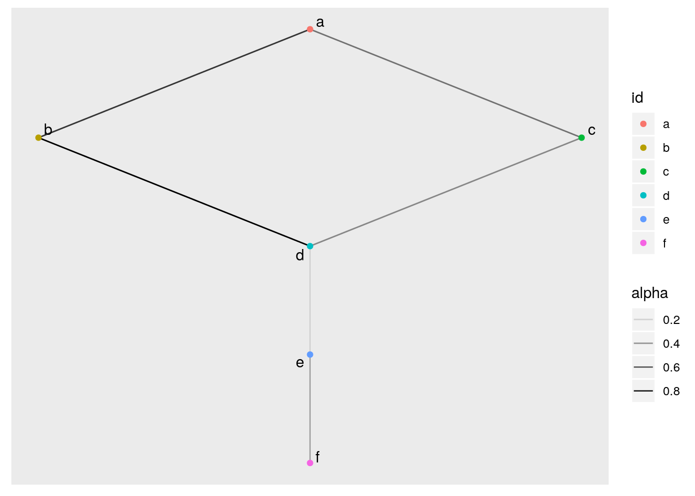
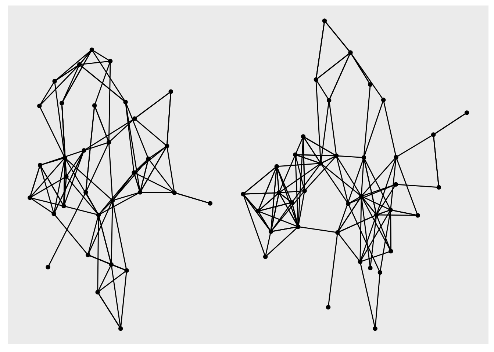
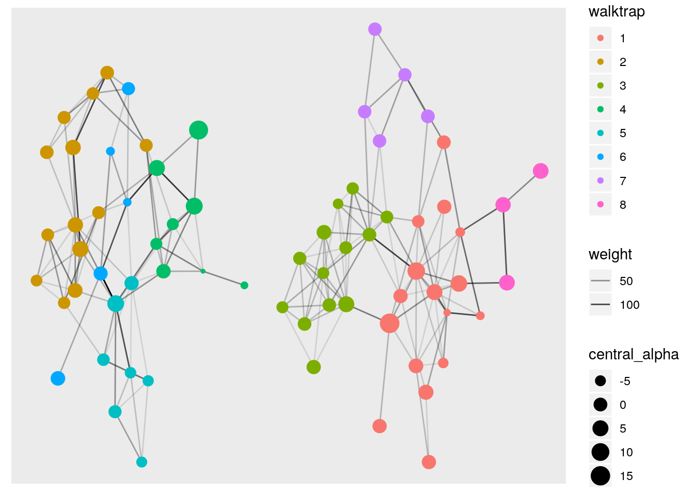

In this post I will you walk through the basics of working with network objects in R. We will first create a simple network as an example, manipulate it using tidygraph’s very clean framework, and then do some simple plotting using ggraph and networkD3. Then we will step it up a bit with a larger dataset and calculate some network metrics.
My goal for this post is to show you how the manipulation steps from the simple example transfer over to the more complex one. And how these packages allow you to easily carry out a lot of complex calculations with very little code.
Libraries needed:
library(tidygraph) # Network manipulation
library(magrittr) # Data wrangling
library(tidyverse) # Data wrangling
library(ggraph) # Static network plotting
library(patchwork) # Arrainging plots
library(networkD3) # Interactive network plottingLets make a simple graph!
Making networks is way easier than it sounds. All it takes is two simple vectors of equal length, then just bind them into a dataframe.
from <- c(1, 1, 2, 3, 4, 5)
to <- c(2, 3, 4, 4 ,5, 6)
# combine the from and to vectors into a simple dataframe
basic <- tibble(from, to)So what we have is what is called an “edge list” which is essentially a dataframe that says “there is a connection from node 1 to node 2, anther from node 1 to node 3.” And on and on…
## # A tibble: 6 x 2
## from to
## <dbl> <dbl>
## 1 1 2
## 2 1 3
## 3 2 4
## 4 3 4
## 5 4 5
## 6 5 6Now lets use networkD3’s simpleNetwork() function to quickly make an interactive plot so we can visualize our simple network. The nice thing about this function is that it only requires an edge list. There is no wrangling needed. Go on, click and drag a node!
networkD3::simpleNetwork(basic)Converting the edge list to a tidygraph object.
In order to convert the edge list into a tidygraph object we use tidygraph::as_tbl_graph().
tidy_basic <- basic %>%
as_tbl_graph()What is a tidygraph object?
The tidygraph object is two dataframes connected. The nodes (each point) and edge (each connection) and it can operate the same as an igraph object. It makes your data very readable, but also allows it to function in the world of igraph.
## # A tbl_graph: 6 nodes and 6 edges
## #
## # A directed acyclic simple graph with 1 component
## #
## # Node Data: 6 x 1 (active)
## name
## <chr>
## 1 1
## 2 2
## 3 3
## 4 4
## 5 5
## 6 6
## #
## # Edge Data: 6 x 2
## from to
## <int> <int>
## 1 1 2
## 2 1 3
## 3 2 4
## # … with 3 more rowsIn order to manipulate the tbl_graph we need to tell R which of the two data frames we want to operate on. This is done with activate(nodes) or activate(edges). I will show how we would name each node with a letter, and give each edge a random amount of transparency. Note the activate call between the operations.
tidy_basic_manipulated <- tidy_basic %>%
activate(nodes) %>% # tell tidygraph we want to work on the modes dataframe
mutate(id = letters[1:6]) %>% # adding an id column for each node a - f
activate(edges) %>% # tell tidygraph we want to work on the edge dataframe
mutate(alpha = runif(6, min = 0, max = 1)) # give each edge a random transparency valueNow let’s take a quick look at the columns we added to the plot. We can see the new alpha column added to the edges, and the id column added to the nodes. Also because the edges were the last thing I activated they are still active here.
## # A tbl_graph: 6 nodes and 6 edges
## #
## # A directed acyclic simple graph with 1 component
## #
## # Edge Data: 6 x 3 (active)
## from to alpha
## <int> <int> <dbl>
## 1 1 2 0.124
## 2 1 3 0.234
## 3 2 4 0.518
## 4 3 4 0.618
## 5 4 5 0.330
## 6 5 6 0.0179
## #
## # Node Data: 6 x 2
## name id
## <chr> <chr>
## 1 1 a
## 2 2 b
## 3 3 c
## # … with 3 more rows#Some quick plotting using ggraph.
We will delve into this a bit more later so for now lets make a basic plot. In order to use ggraph we need to specify the layout, (I will explain this later) and we need to give both the nodes and edges a geom_.
ggraph(tidy_basic_manipulated, layout = 'sugiyama')+
geom_edge_link (aes(alpha = alpha)) + # plot the links between nodes
geom_node_point (aes(color = id)) + # add color to the nodes
geom_node_text (aes(label = id), repel = TRUE) # add the names of each node as a label Super! We created a simple edge list, made it into a tidy graph object, manipulated it, then plotted it. Next we will step up the complexity with a bigger dataframe and by using some network analysis calculations. I hope I can prove that it is about as simple as what we just did.
A slightly more complex example
Lets look a the highschool dataset from ggraph. Now this data has a yearly component, we’ll get to that part but for now lets stick to one year for simplicity.
hs_tidy <- highschool %>%
filter(year == 1957) %>% # remove the time component for this example
select(-year) %>%
as_tbl_graph() # turn the edge list into a tbl_graphAnd lets plot it real quick so we know what we are dealing with.
ggraph(hs_tidy, layout = "stress") +
geom_node_point() +
geom_edge_link()
Now that we have our data into tidygraph’s tbl_graph object we can easily calculate many statistical measures for each node edge easily combining activate() and mutate(). There are quite a few centrality measures from igraph and all are fully supported with tidygraph, a full list can be found HERE.
hs_manipulated <- hs_tidy %>%
activate(nodes) %>%
mutate(
# calculate various centrality measures
central_alpha = centrality_alpha(),
central_degree = centrality_degree(),
# calculate various grouping/clustering measures
components = as.factor(group_components()),
walktrap = as.factor(group_walktrap())
) %>%
activate(edges) %>%
mutate( # calculate edge centrality
weight = centrality_edge_betweenness()
)Let’s take a look at our new metrics
## # A tbl_graph: 70 nodes and 243 edges
## #
## # A directed simple graph with 2 components
## #
## # Node Data: 70 x 5 (active)
## name central_alpha central_degree components walktrap
## <chr> <dbl> <dbl> <fct> <fct>
## 1 1 1. 5 1 1
## 2 2 1 2 1 1
## 3 3 1 2 1 1
## 4 4 -1.33 4 2 2
## 5 5 -0.333 2 2 2
## 6 6 -7.5 3 1 1
## # … with 64 more rows
## #
## # Edge Data: 243 x 3
## from to weight
## <int> <int> <dbl>
## 1 1 13 1.83
## 2 1 14 8.33
## 3 1 20 2.98
## # … with 240 more rowsLet’s plot it and specify aesthetics based off the metrics we calculated.
ggraph(hs_manipulated, layout = 'stress') +
geom_edge_link (aes(alpha = weight)) +
geom_node_point(aes(color = walktrap,
size = central_alpha)) 
Now lets play around a bit with some of the functionality of ggraph. This package is made to behave a lot like ggplot2. However, one key difference is the layout argument. This tells ggraph what algorithm to use when laying out the nodes. You can really deep down this rabbit hole. If you want to you can start creating your own layouts with the particles package.
Or, you can just do what I do and choose random ones until you get one you like.
a <- ggraph(hs_manipulated, layout = "kk") +
geom_node_point(aes(color = components)) +
labs(title = "Layout stays the same",
subtitle = "Nodes don't move")
b <- ggraph(hs_manipulated, layout = "kk") +
geom_edge_link() +
geom_node_point(aes(color = components))
c <- ggraph(hs_manipulated, layout = "kk") +
geom_edge_hive() +
geom_node_point(aes(color = components))
d <- ggraph(hs_manipulated, layout = "linear") +
geom_edge_arc() +
geom_node_point(aes(color = components)) +
labs(title = "Change in layout",
subtitle = "Move the nodes")
e <- ggraph(hs_manipulated, layout = "linear", circular = TRUE) +
geom_edge_arc() +
geom_node_point(aes(color = components))
f <- ggraph(hs_manipulated, layout = "mds") +
geom_edge_link() +
geom_node_point(aes(color = components))
# laying out the plots with patchwork
plots_compared <- ((a/b/c) | (d/e/f)) +
plot_layout(guides = 'collect') +
plot_annotation(tag_levels = 'a')
plots_compared Now that you have mastered static plotting, lets take another look at the interactive plotting we can do with networkD3
Use networkD3 to make a more detailed plot
So, unfortunately networkD3 does not play nicely directly with tidygraph so we need to do some finagling. First we need to convert our tidygraph object to a network d3 object using igraph_to_networkD3(). In order to specify the group each nodes belongs in we need to extract a named vector to specify the group argument. Then we need to create our JavaScript color scale.
# 1. Make the named vector that specifies which group each node belongs to
## extract our nodes from tidygraph as a data frame
group_information <- hs_manipulated %>%
activate(nodes) %>%
as_tibble()
## create a named vector with node names and the group they belong to
node_vec <- as.numeric(group_information[["name"]])
group_vec <- as.numeric(group_information[["components"]])
group_info <- set_names(x = group_vec, nm = node_vec)
# 2. Convert igraph to list for networkD3
d3_object <- igraph_to_networkD3(hs_manipulated, group = group_info)
# 3. Set the colors for d3 orange and blue for now
ColourScale <- 'd3.scaleOrdinal()
.domain(["1", "2"])
.range(["#FF6900", "#89cff0"]);'
# 4. Plot as a forceDirected Network
forceNetwork(Links = d3_object$links,
Nodes = d3_object$nodes,
Source = 'source',
Target = 'target',
NodeID = 'name',
Group = 'group',
colourScale = JS(ColourScale),
zoom = TRUE)We will leave it there for now.